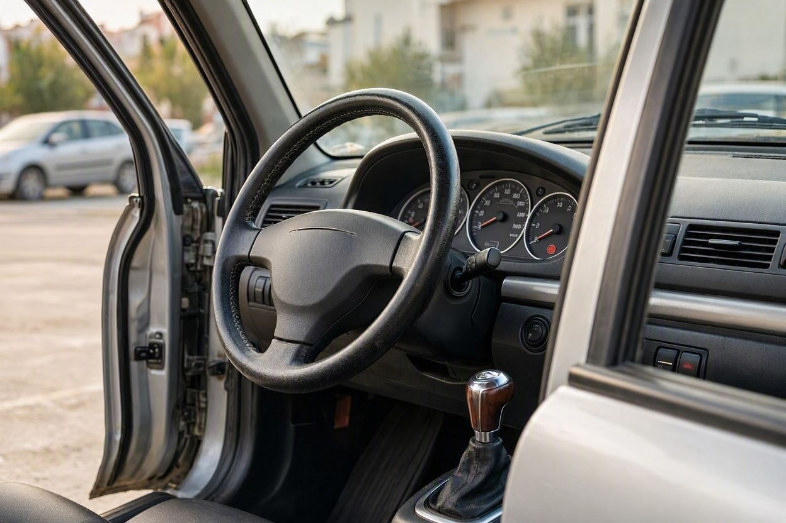
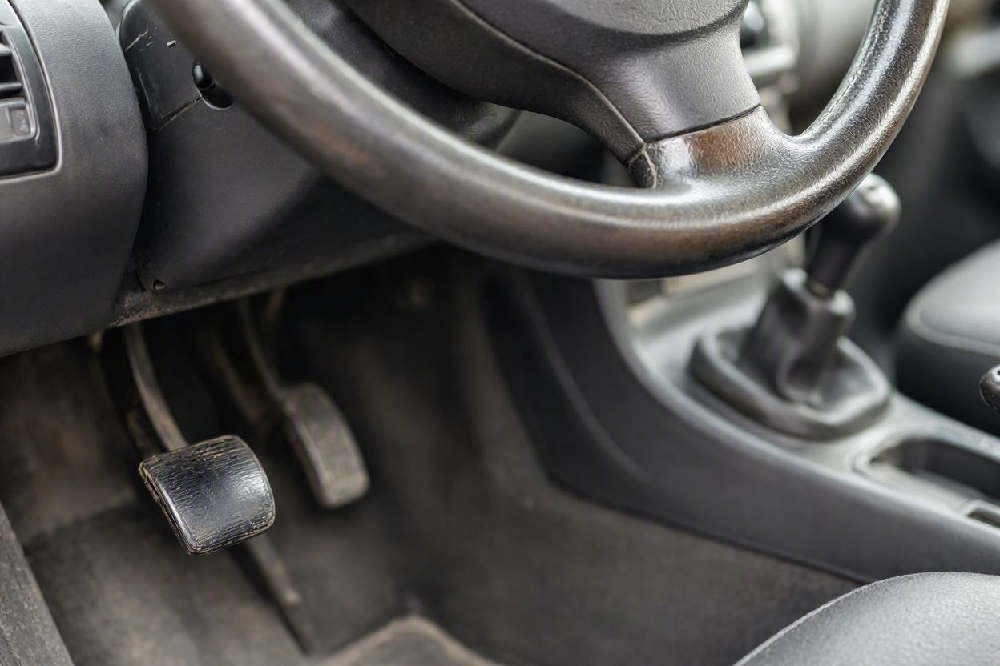
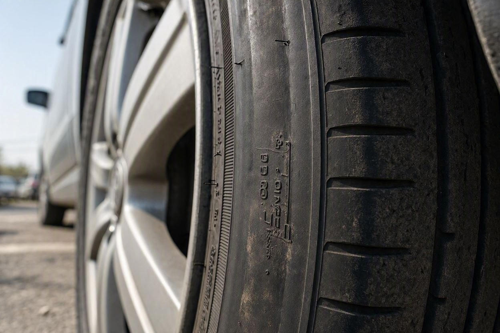
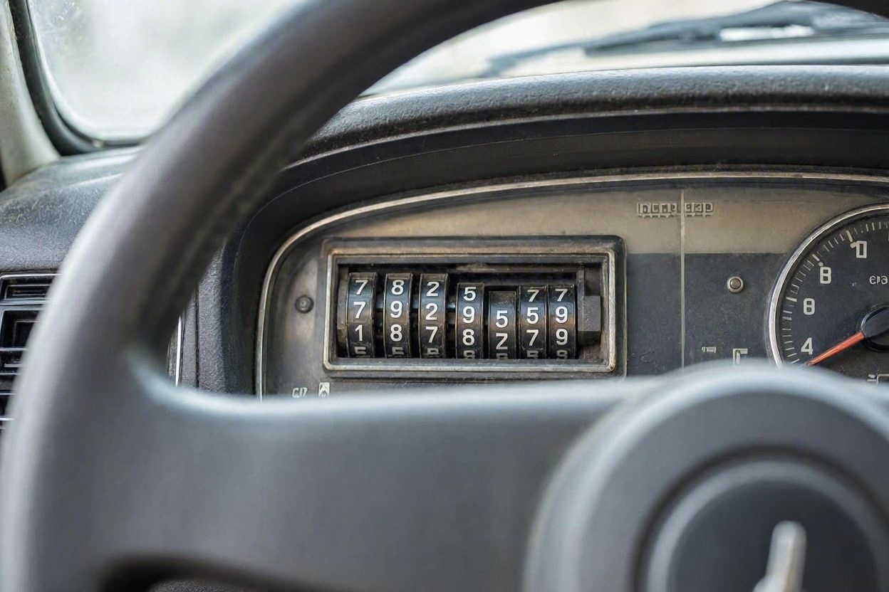

چطور کیلومتر واقعی خودرو را بدون دستگاه تشخیص دهیم؟
خریدار کنار یک خودروی دست دوم ایستاده و کیلومترشمار عدد پایینی نشان میدهد، اما فرمان صاف شده و پدال کلاچ لغزنده است. همین تناقض ساده نشان میدهد که عدد روی صفحه همیشه واقعیت را نمیگوید.
دستکاری کیلومتر یکی از رایجترین روشهای بالا بردن قیمت خودرو در بازار ایران است. خبر خوب این است که برای شک کردن به کارکرد یک ماشین، لازم نیست حتماً دستگاه دیاگ داشته باشید. با کمی دقت و دانستن اینکه به کجا نگاه کنید، میتوانید تناقضها را پیدا کنید. اگر میخواهید پیش از هر معامله خیالتان از سلامت خودرو راحت باشد، خدمات بررسی خودرو کارماچک کنار همین بررسیهای ساده، تصویر کاملتری از وضعیت ماشین به شما میدهد. در ادامه نشانههایی را مرور میکنیم که با چشم و دست قابل بررسیاند.
کیلومتر واقعی خودرو را بدون دستگاه از روی هماهنگی میان عدد کیلومترشمار و میزان فرسایش قطعات پرکاربرد تشخیص میدهند. لاستیک پدالها، روکش فرمان، صندلی راننده، دستهدنده و دکمههای پرکاربرد اگر خیلی بیشتر از عدد اعلامی ساییده باشند، به دستکاری کارکرد مشکوک شوید. هیچ نشانهای به تنهایی قطعی نیست و باید کنار مدارک سرویس سنجیده شود.
- عدد کیلومترشمار، چه آنالوگ و چه دیجیتال، قابل دستکاری است و به تنهایی سند نیست.
- فرسایش پدالها، فرمان، صندلی راننده و دستهدنده تصویر واقعیتری از کارکرد میدهد.
- برچسب تعویض روغن، دفترچه سرویس و سوابق تعمیرگاه میتوانند کارکرد گذشته را لو بدهند.
- ناهماهنگی چند نشانه با هم، مهمتر از یک ایراد تنهاست.
- برای اطمینان نهایی، بررسی تخصصی جای حدس و گمان را میگیرد.
چرا کیلومتر خودرو دستکاری میشود؟
کارکرد پایینتر یعنی قیمت بالاتر. همین انگیزه ساده باعث میشود بعضی فروشندهها عدد کیلومترشمار را کم کنند. در خودروهای قدیمیتر با کیلومترشمار آنالوگ، این کار با باز کردن و چرخاندن مکانیکی ارقام انجام میشد. در خودروهای امروزی که صفحه دیجیتال دارند، کارکرد در حافظه ثبت میشود، اما با ابزارهای خاص باز هم میتوان عدد نمایشی را تغییر داد.
نکته مهم اینجاست: دستکاری عدد روی صفحه راحت است، اما جعل فرسایش واقعی قطعات بسیار سختتر است. به همین دلیل بدنه و کابین خودرو صادقتر از کیلومترشمار حرف میزنند.
نشانههای فرسایش داخل کابین
کابین بیشترین تماس را با راننده دارد و اولین جایی است که کارکرد بالا خودش را نشان میدهد. این قطعات را با دقت نگاه کنید:

- لاستیک پدالهای کلاچ، ترمز و گاز: اگر آجها صاف شده یا لاستیک نو و بیتناسب با بقیه کابین است، به هر دو حالت مشکوک شوید.
- روکش فرمان و دکمههای روی آن: براق شدن، صاف شدن و رنگپریدگی نشانه استفاده زیاد است.
- دستهدنده و ترمز دستی: ساییدگی روکش و لقی، با کارکرد بالا هماهنگ است.
- صندلی راننده: خوابیدگی اسفنج، پارگی کنارهها و فرسودگی لبهای که موقع سوار شدن تماس دارد.
- دکمههای پرکاربرد مثل شیشهبالابر و استارت: ساییدگی حروف و براق شدن سطح.
حالا اینها را کنار عدد کیلومترشمار بگذارید. کابینی که مثل خودروی پرکارکرد ساییده شده اما عدد پایینی نشان میدهد، یک تناقض جدی است. برعکس، صندلی و پدال نو در خودرویی با کارکرد ادعایی بالا هم میتواند به معنی تعویض برای پنهانکاری باشد.
پیش از معامله، خودرو را بررسی کنید
اگر درباره کارکرد واقعی یا وضعیت فنی خودرو مطمئن نیستید، بررسی تخصصی میتواند ابهامهای معامله را کمتر کند.
شروع کارشناسی خودرولاستیکها و تاریخ تولید چه میگویند؟
لاستیک به تنهایی سند کارکرد نیست، چون قابل تعویض است. اما در کنار بقیه نشانهها کمک میکند. روی دیواره هر لاستیک یک کد چهار رقمی وجود دارد که دو رقم اول هفته و دو رقم دوم سال تولید را نشان میدهد.

اگر خودرویی کارکرد بسیار پایینی دارد اما لاستیکهایش کاملاً ساییده و قدیمیاند، یا برعکس چند دست لاستیک عوض شده، این موضوع را کنار سایر شواهد بگذارید. لاستیک اصلی و کمساییده در خودرویی با کارکرد ادعایی بالا هم جای سؤال دارد.
برچسب تعویض روغن و دفترچه سرویس
اسناد و برچسبها یکی از قابلاعتمادترین راهها برای بازسازی تاریخچه کارکرد هستند. اغلب تعمیرگاهها هنگام تعویض روغن، یک برچسب کوچک روی شیشه یا ستون در نصب میکنند که کیلومتر آن زمان روی آن نوشته شده است.
- برچسب تعویض روغن روی شیشه یا چارچوب در را بررسی کنید و عدد آن را با کیلومترشمار فعلی مقایسه کنید.
- دفترچه سرویس و مهرهای نمایندگی، ترتیب زمانی کارکرد را نشان میدهند.
- فاکتورهای تعمیر و قطعات، گاهی کیلومتر خودرو را در تاریخ مشخصی ثبت کردهاند.
اگر برچسب یا دفترچه عددی بالاتر از کیلومترشمار فعلی نشان بدهد، یعنی کارکرد به عقب برگردانده شده است. این یکی از روشنترین شواهد دستکاری است. برای مرور کامل مواردی که باید پیش از معامله چک شوند، چک لیست خرید خودرو دست دوم کنار همین بررسی کیلومتر به کارتان میآید.
ردپای دستکاری روی کیلومترشمار
گاهی خود صفحه کیلومترشمار نشانههای دستکاری را لو میدهد. این موارد را نگاه کنید:

- در صفحههای آنالوگ، ارقام باید در یک راستا باشند. نامیزانی یا فاصله نامنظم ارقام، نشانه باز شدن صفحه است.
- رد دستکاری، خط و خش یا پیچهای باز و بستهشده پشت قاب صفحه.
- در خودروهای دیجیتال، روشن نشدن کامل صفحه، پیام خطا یا پیکسلهای خاموش گاهی به دستکاری مربوط است.
این نشانهها همیشه قطعی نیستند. صفحه ممکن است به دلایل فنی دیگری باز شده باشد. برای همین به یک علامت اکتفا نکنید و مجموعه شواهد را کنار هم بسنجید.
| نشانه | کارکرد ادعایی پایین | احتمال دستکاری |
|---|---|---|
| پدال و فرمان بسیار ساییده | ناهماهنگ | بالا |
| برچسب تعویض روغن با عدد بالاتر | ناهماهنگ | بسیار بالا |
| پدال و فرمان کاملاً نو | مشکوک به تعویض | متوسط |
| ارقام نامیزان کیلومترشمار | نامرتبط | بالا |
روش بررسی گام به گام
برای اینکه چیزی از قلم نیفتد، این ترتیب را دنبال کنید:
- مرحله اول:عدد کیلومترشمار را یادداشت کنید تا مبنای مقایسه داشته باشید.
- مرحله دوم:پدالها، فرمان، دستهدنده و صندلی راننده را از نظر فرسایش بررسی کنید.
- مرحله سوم:برچسب تعویض روغن و دفترچه سرویس را پیدا کنید و اعداد را با صفحه تطبیق دهید.
- مرحله چهارم:تاریخ تولید لاستیکها و تناسب آنها با کارکرد ادعایی را نگاه کنید.
- مرحله پنجم:ارقام و قاب کیلومترشمار را از نظر نامیزانی و رد دستکاری بررسی کنید.
- مرحله ششم:همه شواهد را کنار هم بگذارید. اگر چند مورد ناهماهنگ بود، معامله را متوقف و بررسی تخصصی کنید.
در خودروهای تصادفی، کارکرد و سلامت بدنه اغلب با هم دستکاری میشوند. اگر به وضعیت بدنه هم شک دارید، راهنمای تشخیص شاسی ضربه خورده خودرو کمک میکند تصویر کاملتری از تاریخچه ماشین بسازید.
محدودیتها و زمان مراجعه به کارشناس
راستش را بخواهید، بررسی چشمی نشانهها را پیدا میکند، اما همیشه پاسخ قطعی نمیدهد. فروشنده حرفهای میتواند پدال و فرمان را نو کند، صندلی را روکش بکشد و برچسبها را بردارد. تشخیص قطعی کارکرد در بسیاری موارد به خواندن حافظه ماژولهای خودرو و مقایسه دادهها نیاز دارد که فقط با ابزار تخصصی ممکن است.
کارماچک خدمات کارشناسی خودرو را برای بررسی فنی، رنگ، بدنه و عوامل مؤثر بر ارزش معامله ارائه میدهد. فقط ایراد خودرو را شناسایی نمیکنیم؛ اثر آن روی هزینه تعمیر و ارزش واقعی معامله را هم مشخص میکنیم. اگر نشانهها ناهماهنگ بود یا معامله ارزش مالی بالایی داشت، بهتر است پیش از پرداخت، یک کارشناسی فنی و بدنه انجام شود.
جمعبندی
کیلومتر واقعی خودرو را نمیتوان فقط از روی عدد صفحه فهمید. کلید کار، سنجیدن هماهنگی میان کارکرد اعلامی و فرسایش واقعی قطعات است. پدال، فرمان، صندلی، لاستیک و مدارک سرویس هر کدام بخشی از داستان را میگویند و وقتی چند نشانه با هم جور درنیایند، باید مکث کنید. این بررسیها ریسک را کم میکنند، اما برای اطمینان کامل، بررسی تخصصی همچنان مطمئنترین راه است.
کارکرد واقعی خودرو را مطمئن شوید
پیش از پرداخت پول، وضعیت فنی و کارکرد خودرو را با یک بررسی دقیق روشن کنید.
ثبت درخواست کارشناسیسؤالات متداول
آیا میشود کیلومتر واقعی خودرو را بدون دستگاه فهمید؟
به شکل قطعی نه، اما میتوان به کارکرد واقعی نزدیک شد. با مقایسه عدد کیلومترشمار و فرسایش پدال، فرمان، صندلی و مدارک سرویس، میتوان به دستکاری مشکوک شد. این نشانهها احتمال را روشن میکنند و برای تشخیص دقیق، بررسی تخصصی لازم است.
کدام قطعه بیشترین اطلاعات را درباره کارکرد میدهد؟
قطعات پرتماس با راننده مثل لاستیک پدالها، روکش فرمان و صندلی راننده بهترین نشانهها هستند، چون جعل فرسایش آنها سخت است. البته چون قابل تعویضاند، باید همراه مدارک سرویس و برچسب تعویض روغن بررسی شوند تا نتیجه معتبرتر باشد.
برچسب تعویض روغن چطور دستکاری کیلومتر را لو میدهد؟
روی برچسب تعویض روغن معمولاً کیلومتر خودرو در زمان سرویس نوشته میشود. اگر این عدد از کیلومترشمار فعلی بیشتر باشد، یعنی کارکرد به عقب برگردانده شده است. همین یک تناقض ساده میتواند دستکاری را آشکار کند، پس همیشه به شیشه و چارچوب در نگاه کنید.
آیا کیلومتر خودروهای دیجیتال هم دستکاری میشود؟
بله. کارکرد در حافظه خودروهای دیجیتال ثبت میشود، اما با ابزارهای خاص میتوان عدد نمایشی را تغییر داد. به همین دلیل صفحه دیجیتال هم سند قطعی نیست و باید مثل صفحه آنالوگ، با شواهد فیزیکی و مدارک سرویس سنجیده شود.
پدال و فرمان نو یعنی خودرو کمکارکرد است؟
نه لزوماً. گاهی همین قطعات را برای پنهان کردن کارکرد بالا عوض میکنند. اگر بقیه کابین و بدنه با خودرویی پرکارکرد جور دربیاید اما پدال و فرمان کاملاً نو باشند، این ناهماهنگی خودش علامت هشدار است و باید دقیقتر بررسی شود.
چه زمانی باید سراغ کارشناس بروم؟
هر وقت چند نشانه با هم ناهماهنگ بودند، معامله ارزش بالایی داشت، یا نتوانستید مدارک سرویس را تطبیق دهید. در این موارد بررسی تخصصی کارکرد و وضعیت فنی، جای حدس را میگیرد و از پرداخت هزینه بابت خودروی دستکاریشده جلوگیری میکند.